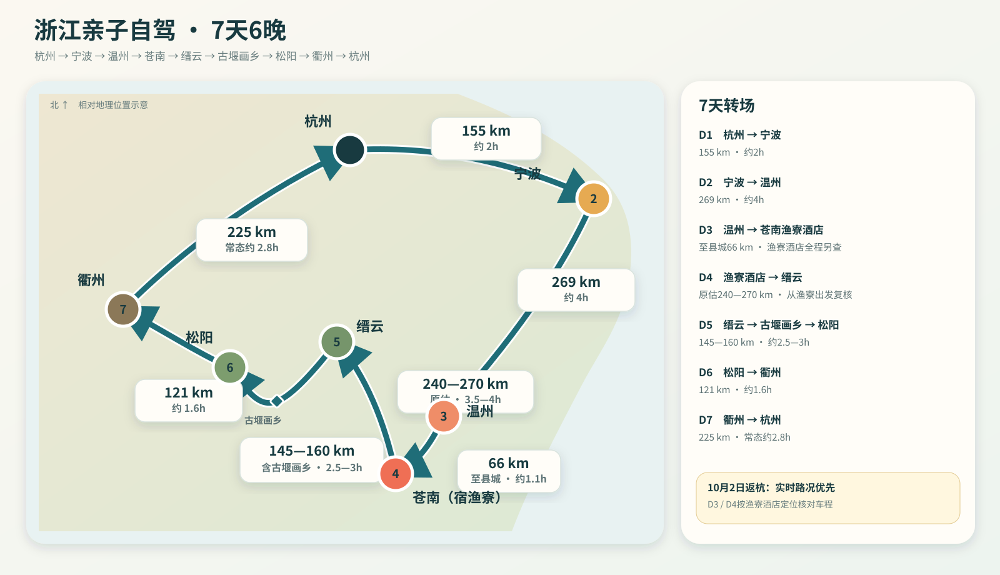

国庆返程提醒：D7 是 10 月 1 日。当天从衢州返杭州不要按普通工作日车程卡时间，上午先看实时高速路况；如果拥堵明显，南孔或博物馆可以直接取消，早餐后返杭。

行程节奏
前两天 · 城市人文
宁波只住一晚，保留天一阁、东钱湖和韩岭；D2 下午直接去温州。
D3 · 城市转海岸
温州上午抓一个重点，午饭后去苍南，下午开始浙南168海岸线。
D4—D5 · 山水与古村
苍南转缙云仙都，再经古堰画乡到松阳，后半程明显慢下来。
D6—D7 · 衢州收尾
松阳古村后转衢州，用老城、南孔、人文和美食收尾，再回杭州。
每天具体安排
D1 · 9月25日｜杭州 → 宁波
- 08:30 杭州出发，常态约 2 小时。
- 午前到宁波，先入住、吃午饭。
- 14:00—17:00 天一阁 + 鼓楼/月湖片区，慢慢走。
- 晚餐吃宁波菜；孩子状态好再去老外滩散步。
- 住宿：宁波。
D2 · 9月26日｜宁波 → 温州
- 08:30 退房去东钱湖。
- 09:00—11:30 湖景 + 韩岭老街，不做完整环湖。
- 11:30 午饭，约 13:30 出发去温州。
- 傍晚入住温州；晚上公园路、五马街一带边走边吃。
- 重点尝鱼丸、灯盏糕、糯米饭。
- 住宿：温州。
D3 · 9月27日｜温州 → 苍南
- 08:30 江心屿；若天气或轮渡不合适，直接换成老城慢逛。
- 11:30 温州午饭。
- 12:30—13:00 出发去苍南。
- 下午进入浙南168，选漂亮短段边开边停，不刷完整路线。
- 傍晚海边散步、看日落、吃海鲜。
- 住宿：苍南海边。
D4 · 9月28日｜苍南 → 缙云仙都
- 早晨在海边再留一点时间。
- 09:30 左右 出发去缙云，常态约 3.5 小时，是全程最长转场。
- 下午进入仙都，重点走朱潭山、倪翁洞、溪边田野。
- 不追求全部打卡，孩子累了就提前结束。
- 晚上吃缙云烧饼、土爽面。
- 住宿：缙云/仙都附近。
D5 · 9月29日｜缙云 → 古堰画乡 → 松阳
- 08:00 仙都晨景，补前一天没走完的轻松段。
- 10:00 左右 离开缙云，前往古堰画乡。
- 中午到下午看瓯江、通济堰和古樟一带。
- 16:00 左右 去松阳。
- 晚上松阳老街散步、吃当地菜。
- 住宿：松阳。
D6 · 9月30日｜松阳 → 衢州
- 上午古村只选 1—2 个，优先杨家堂、松庄；不刷村。
- 中午回松阳吃饭、休息。
- 午后出发去衢州，常态约 2 小时。
- 傍晚水亭门、老城区慢逛。
- 晚上认真吃一顿衢州菜。
- 住宿：衢州。
D7 · 10月1日｜衢州 → 杭州
- 起床先查看衢州到杭州高速实时路况。
- 路况正常：孔氏南宗家庙 + 衢州市博物馆，按状态二选一或都走。
- 中午吃完饭返杭。
- 若高速已经明显拥堵，直接早餐后出发，把上午景点全部取消。
- 普通时段约 2.5 小时；国庆当天以导航为准。
住宿建议
宁波 · 1晚
天一广场 / 老外滩附近，D1 晚上步行方便，D2 退房后直接去东钱湖。
温州 · 1晚
鹿城老城附近，方便 D2 晚上吃逛，D3 上午去江心屿或老城。
苍南 · 1晚
炎亭或海岸线附近，停车方便优先，没必要为了酒店等级绕远。
缙云 · 1晚
仙都附近优先，方便第二天早晨继续看景，减少来回开车。
松阳 · 1晚
县城 / 老街附近，晚上吃饭散步方便，第二天去古村也好衔接。
衢州 · 1晚
水亭门 / 老城附近，方便 D6 晚饭和 D7 上午的人文点。
这条路线最重要的三个原则
1. 景点随时可删
每天只保留一个核心体验。孩子累、下雨、堵车，就删掉次要点，不补作业。
2. 苍南和松阳都不要赶
海岸线和古村的价值都在“停下来”，不是完成多少公里或打卡多少村。
3. D7 返程优先级最高
10 月 1 日的返杭路况比南孔、博物馆更重要。当天宁可少玩，也不要被堵车拖垮最后一天。
备用原则
天气差时，优先保留城市人文和美食；天气好时，把时间给海岸、仙都和松阳古村。